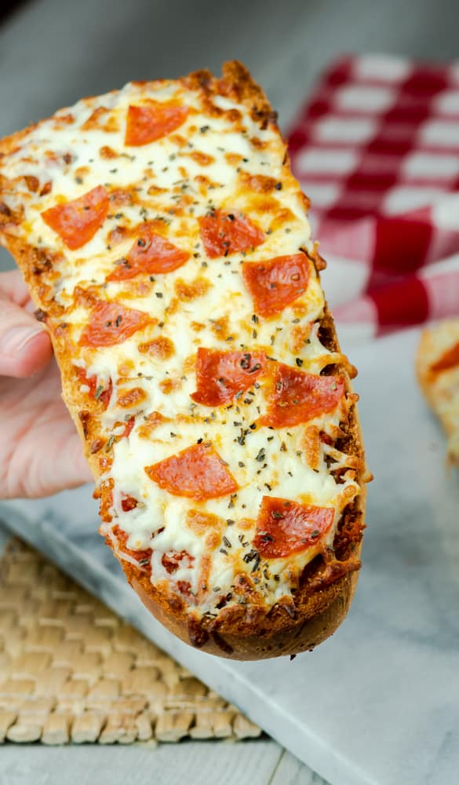

French Bread Pizza

Description
Save time and the money in your wallet by making a pizza with fresh, crispy French bread.
Kids and adults alike will enjoy the variety and simplicity of this classic dish.
Bake in an oven, air-fryer or microwave.
Ingredients
- French bread
- tomato sauce
- garlic
- Parmesan cheese
- butter
- oregano
- Mozzarella cheese
- toppings (sausage, veggies, etc.)
Directions
- Cut bread in half lengthwise, brushing it with garlic butter.
- Top bread halves with tomato sauce, sprinkle on oregano, cheeses, and toppings of choice.
- Place on a baking sheet and bake until browned.